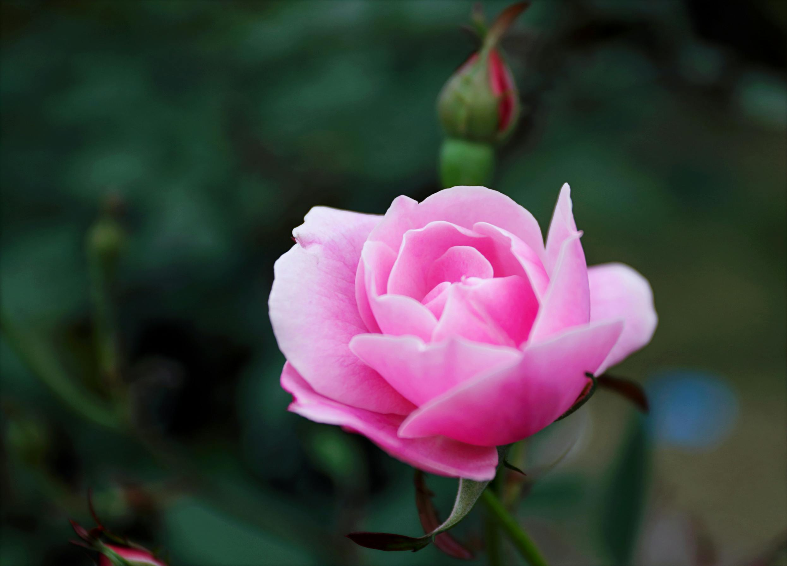

Caring for Specific Types of Flowers
Roses
Roses need plenty of fresh water and daily trimming of the stems to remain hydrated.
Lilies

Lilies prefer cooler environments and require fresh water every day to stay healthy.
Tulips

Tulips are sensitive to light and should be kept in a cool area with partial light exposure.